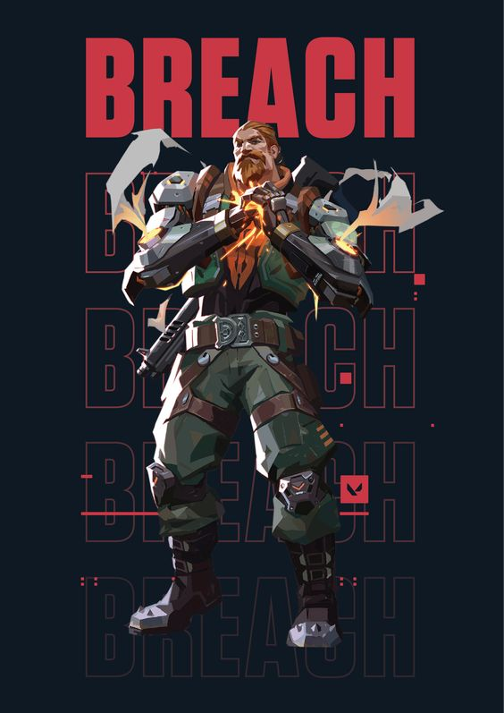

Brimstone
Liam "Brimstone" Byrne is the commander of the VALORANT Protocol, a secretive organization tasked with protecting Earth from cataclysmic disasters and dangerous situations involving radianite. A former firefighter and soldier from Baltimore, Byrne is fiercely loyal to all his allies and organizations, always keeps his squadmates close. But although he would do anything for them, Byrne hasn't always been able to save everyone. After the death of a close friend, Tariq Porter, his loss greatly affected Byrne, haunted by what had happened despite all his own best efforts to save him. It was around this time that he would then join Kingdom Corporation, giving him something at a time when he needed it most. Byrne would go on to become a veteran of Kingdom's K-SEC branch, once again developing a strong loyalty to his employer. As commander of VALORANT and its most senior member, Brimstone always encourages his teammates whenever he can, and does not seem to obligate his subordinates to speak in a formal or professional manner that is usually seen in the military; this is notable as he refers to the younger agents as "kids." Additionally, Brimstone describes himself to be stubborn, and is quite adamant in not letting age get him into retirement anytime soon.
Viper
American chemist Sabine Callas was a pivotal figure during the modern rediscovery of radianite. A distinguished scientist working at Kingdom Corporation, she had been one of the first to investigate the substance when the organization came across it. However, news of what Callas and Kingdom were about to uncover reached the Scions of Hourglass, an organization that already secretly knew about radianite and didn't want its existence to become public knowledge again to Alpha. Hourglass proceeded to send their most talented asset, the assassin "Ghost", to kill Callas. On the day of the attempted assassination however while Callas was working in her lab, she was able to defend herself, with Ghost being hit in the face by a vial of chemicals she had been holding before he had then ended up being trapped in a test chamber that Callas proceeded to activate while he was still inside.
Omen
For many years the phantom radiant Omen had no memory of his past and how he came to be in his current state. Firstly working alongside Dr. Sabine Callas (one of his only apparent links to who he used to be) at Kingdom Corporation, he would then go on join her in the founding of the VALORANT Protocol. During his time as a secret agent, Omen was driven by his search to discover who he previously was. Without answers he was unable to find peace, his predicament being only a nightmare for him to live in. It was then after over a decade of time that a path towards the truth finally appeared when the Protocol came across an hourglass symbol after one of their missions, something that immediately triggered a sense of recognition in Omen. Soon after, VALORANT then ended up meeting the person responsible for this symbol appearing, the young assassin Li Zhao Yu, who was recruited into the organization as "Iso". At first it was hard to get much information out of Iso as he shut down many queries about his own past, but eventually he came forward with his own truth; he had still been working undercover for his former employer, the Scions of Hourglass, and he had joined VALORANT in order to access his next target - Omen.
KillJoy
Klara Böhringer is an inventor from Germany who was born to one parent with Germanic ancestry. A nominee for the Distinguished Inventor award, Böhringer became the lead for Kingdom's R&D department at the age of 18. Incredibly successful, she had many breakthroughs during her time at Kingdom with several of her creations and innovations.[1] Böhringer was the fourth agent to join the VALORANT Protocol as "Killjoy". She earned her call sign after her team initially used it to compliment her outstanding skills that reduced the amount of work the rest of them had to do, with Klara deciding to keep the nickname. Killjoy now continues her innovative work as an agent of VALORANT and the protégé of the organization's commander, Brimstone. From inventing spike defusers under pressure of an incoming detonation to building teleporters for transportation between worlds, any device the Protocol needs for any purpose - with the right tools, Killjoy can make it.
Cypher
Amir El Amari (Arabic: أمير العماري; meaning "prince of the moon") hails from Rabat, Morocco. Growing up and living there in poverty at times, his city's resources were depleted due to the activities of Kingdom Corporation in the area, with El Amari harboring a negative view towards them as a result. An information broker who is constantly gathering intel, El Amari mostly keeps the results of his work and his secrets close to his chest - especially those about himself. Going to great lengths to ensure no one can gather secrets on the man who knows all the secrets, El Amari has set up multiple safehouses in order to stay hidden as well as never going anywhere without wearing his black face-concealing mask. Even once recruited by the secretive VALORANT Protocol as its fifth agent, "Cypher", El Amari still keeps his face and identity hidden from his fellow agents. For now, nothing is worth the risk of removing his mask - not even for those closest to him.
Sova
Hailing from the town of Severomorsk, in Murmansk Oblast, Russia, Sasha Novikov (Russian: Саша Новиков) is an archer who became an agent for the VALORANT Protocol as its sixth recruit, "Sova". With his right eye replaced with a mechanical one after he lost it, Sova primarily serves as the team's scout, gathering information and searching for targets using olden methods should technology come up short. Being highly capable and reliable both in the field and with his work, whilst also having experience with multiple radianite-related events (having traveled through a rift and having met his Omega counterpart), Sova has earned a reputation of being one of the Protocol's most trusted agents, especially to the organization's commander, Brimstone.
Sage
Wei Ling Ying (Chinese: 魏玲瑩) is a radiant monk coming from China. Going on to become an agent for the VALORANT Protocol as its seventh recruit, "Sage", Wei was able to work her way quickly up the ranks, with the Protocol's superiors identifying natural leadership qualities in her. Sage is currently active in VALORANT's radiant agent recruitment and training, interacting with multiple new radiants upon recruitment and taking the lead on its radiant training program. Described as a stronghold, Sage is an agent who always looks out for her teammates and offers help whenever she can. She has fully embraced her powers which give her control of life, and wishes to use them to keep her team alive for as long as possible. Calmer and more collected than some of her more energetic allies, Sage always imparts encouraging words to rally the team up and guide them to victory.
Phoenix
Jamie Adeyemi is a radiant hailing from the Peckham district in London, England. Growing up, Adeyemi attended a Performing Arts school in the area but was later suspended. Recruited into the VALORANT Protocol as its ninth agent, "Phoenix", Adeyemi was heavily involved with the Protocol's activities from 10 AFL onwards. With much information kept from him as need-to-know as a recent recruit, he was unable to prevent a spike detonation in Venice whilst on a solo mission. Phoenix was given another opportunity to stop one the next day when another attack occurred in Rabat, and it was here that he first came face-to-face with the sole perpetrator, his own Omega counterpart. Frustrated with how much was being kept in the dark, despite going on to prevent the detonation this time with the help of a team, Phoenix was finally filled in on the threat posed by Omega Earth. A duelist by role and nature, Phoenix is brash, impulsive, and has a lot of confidence, never hesitating to charge into a fight head-on despite not getting a full grasp of the situation, much to the chagrin of his more collected teammates.
Jett
Han Sunwoo (Korean: 한선우) hails from South Korea, with possible links to the Insa-dong neighborhood in Seoul. As a chef in her early life, she was involved in an incident relating to her wind-like radiant powers at the restaurant she worked at, causing a "freak storm" that all but destroyed the building. Han fled the scene soon after. Later on, Han would be recruited by the VALORANT Protocol to become its tenth agent, "Jett". Whilst working for the Protocol however, an incident occurred in Venice that destroyed part of the city. When authorities issued warrants for the arrests of the perpetrators, one of them was revealed to look exactly identical to Jett. Though Jett herself had nothing to do with the mission, the rest of the world now believed that she was a threat to them. She couldn't explain that it wasn't her to those she know outside of VALORANT, unable to even understand what was going on herself, and it left them feeling disgusted, horrified, and ashamed at her, forcing her to go on the run once more. It has since been understood that the lookalike was actually a mirror version of herself from another Earth, clearing Jett of any wrongdoing. Unable to reveal any info associated with the VALORANT Protocol however, and unable to convince anyone of her innocence in a population that knows nothing of alternate Earths, to the rest of the world Jett remains one of its most dangerous radiants.
Reyna
Zyanya Mondragón is a Radiant from Mexico with the power to absorb life energy from the souls of people that she kills. After being affected by a disastrous event involving machines, Mondragón has a strong dislike for technology and humanity, believing herself and her fellow Radiants to be the true future for Earth. Before her time as a VALORANT Protocol agent, she set up a sanctuary to help people escape from Kingdom and heal, establishing a community there and becoming their protector and avenger. None of them however hold the same place in her heart as her little sister, Lucia, someone who Mondragón has been close to losing. After her eventual recruitment into VALORANT as its eleventh recruit, "Reyna", she was able to work with some of the organization's scientists to set up a procedure that allowed her to transfer some of the life energy she collects into Lucia, keeping her alive - at least for now. With the process remaining inefficient and Lucia's fate still uncertain, Reyna continues to hunt down any enemies she finds in her way, gaining more life energy with every kill and more time bought for her sister. Reyna's aggressive, bitter nature however draws concern from some of her fellow agents, and some fear what she could end up becoming should she be unable to save Lucia...
Raze
Tayane Alves is an engineer coming from Salvador, Bahia, Brazil, with a strong enthusiasm for explosives and paint - usually combined. Holding strong objections towards Kingdom Corporation's operations in Bahia, Alves was involved in driving the company out of her home state and forcing them to abandon their sites there, the marks of her tools staining the plots as a testament to her victories. Hired since then to work for the VALORANT Protocol as its twelfth agent, "Raze", Alves now sows her chaos against bigger threats to Earth. However, as the paint fades from Salvador's walls, Raze cannot afford to leave her home completely behind, lest Kingdom look to make its return there. The one-woman party from Bahia, Raze is always playful, impulsive, and spontaneous. She radiates chaotic energy and creates havoc on the battlefield, destroying every obstacle that is blocking her path. According to Sage, she can be impatient and won't stick to plans. She is notoriously cheeky, as seen when she earned Cypher's ire after constantly breaking his gadgets. Fun-loving as she is, she refers to her fellow agents as family and always assures them that she'll be the one leading the fireworks display.

A criminal from Sweden, Erik Torsten was set to be convicted along with the rest of his family for their crimes. As he was a double congenital amputee however, the judge was pitiful and lenient towards him, giving him a smaller sentence that soon allowed Erik to return to his old ways. Building himself his own mechanical arms to use, Erik would hit back with his own criminal assignments, becoming so notorious for the terrible things he had done that he eventually had to go into hiding and effectively exile himself from his home. During these times, he also encountered the young Brazilian Tayane Alves, who worked alongside him for a while and provided some major upgrades to his arms, resulting in the carbon-steel titanium-plating version that he uses to this day. Later approached to become a VALORANT agent, Torsten accepted the offer though his induction was not a smooth affair. Leaving behind his criminal life in line with VP procedure, his records were sealed and he became the Protocol's thirteenth agent, "Breach". Despite now serving for the secret organization with more dignified actions however, the consequences of his criminal past forever remain, leaving him a man that, for all he does now, can still never truly return home.
Breach
A criminal from Sweden, Erik Torsten was set to be convicted along with the rest of his family for their crimes. As he was a double congenital amputee however, the judge was pitiful and lenient towards him, giving him a smaller sentence that soon allowed Erik to return to his old ways. Building himself his own mechanical arms to use, Erik would hit back with his own criminal assignments, becoming so notorious for the terrible things he had done that he eventually had to go into hiding and effectively exile himself from his home. During these times, he also encountered the young Brazilian Tayane Alves, who worked alongside him for a while and provided some major upgrades to his arms, resulting in the carbon-steel titanium-plating version that he uses to this day. Later approached to become a VALORANT agent, Torsten accepted the offer though his induction was not a smooth affair. Leaving behind his criminal life in line with VP procedure, his records were sealed and he became the Protocol's thirteenth agent, "Breach". Despite now serving for the secret organization with more dignified actions however, the consequences of his criminal past forever remain, leaving him a man that, for all he does now, can still never truly return home.
Skye
A Radiant from Nimbin, Australia, Kirra Foster spent years fighting against Kingdom Corporation's ventures in Eastern Australia. Resisting from Sawn Rocks to Kangaroo Valley, her efforts against Kingdom earned her the title of the "Great Reclaimer". Later approached by the VALORANT Protocol to become an agent, Foster was initially unsure of joining as she didn't want to give up her fight against Kingdom and leave her homeland unprotected. However, when Sage decided to contact and direct her to a massive rift in the sky near her home, telling her there were many more like that one across the world, Kirra realized that the fight was bigger than just her home territory. Finally answering the call, she now serves as the Protocol's fourteenth agent, "Skye". While Skye has said that she was not used to working with other people prior to joining VALORANT, she has quickly shown herself to be a team player through and through, guiding and reminding her team to move as one unit and work together as they complete their mission. With her affinity to feel and sense the natural world and everything else around her, Skye is naturally observant, and will quickly note whenever she senses something unusual with her surroundings.
Yoru
A radiant from Tokyo, Japan, Kiritani Ryo (Japanese: 桐谷 諒) is a man dedicated to uncovering his past. Specifically interested in his ancestors and an ancient order of samurai, Kiritani's search has kept on bringing him to Kingdom's S22 container port. On his first visit, he broke into the facility and stole a mask from a set of samurai armor that allowed him to see into another dimension. He was later recruited by the VALORANT Protocol as its fifteenth agent, "Yoru", and shortly after this his familiarity with S22 saw him returning there on assignment to prevent a spike detonation by hostiles from Omega Earth.[1][2] Still not done with S22 however, Yoru continued to return to the site despite having other missions to do for the Protocol and against the advice of his superiors. His research led him to discovering new information relating to both radianite and the alternate dimension that he could access and enter with his powers. Finding a part of the ship with older dimensional fabric, Yoru suddenly fell through into a space that felt as if he was traveling from "now to then". He pushed forward as far as he could and heard a woman's voice calling out to him, one he thought he recognized, but before he could answer back, the rift closed. Left with even more questions, Yoru continues his research whilst serving as an agent of VALORANT, and hopes one day the Protocol's leadership will see the value in looking into these events along with him.
Astra
Hailing from Accra, Ghana, Efia Danso is a Radiant with powers relating to cosmic energies, contained by a golden Guardian gauntlet. She uses these in her role as an astral guardian, ensuring that any universe-altering events do not have major consequences. Recruited by the VALORANT Protocol as its sixteenth agent, "Astra", she continues to serve as an astral guardian in between her missions for the VP, though at times her two roles have come together. When the Protocol was keeping track of the fugitive Varun Batra whilst he was on the run from his former employer in Southern Asia, Astra discovered Batra was also in possession of a Guardian artifact, a set of five rings and a bracelet. Further compelled to bring him in, the VP was able to rescue and subsequently recruit Batra as agent "Harbor". With access to the bracelet, Astra was able to deduce from engravings left on it that it could function as a key to a lost Guardian city that she had never been able to find in her time as a Guardian. To her surprise however, Harbor revealed he had found it before; the "City of Flowers" was located in the Western Ghats of India, but Harbor had arrived there only to find it decimated and sabotaged. Still hoping to salvage something from this situation, Astra's attention turned to Omega and the possibility for a counterpart of the city to also exist there.
Kay/O
A robot from an alternate future, KAY/O was created by the humans of that time to fight back against the radiants that they were at war with. Using the power of polarized radianite, KAY/O proved effective in shutting down radiants' abilities, making them easier to eliminate. The radiant Reyna was of particularly high importance to KAY/O for her actions against humanity, and KAY/O was able to eventually eliminate her. However, at this point humans had already suffered severe losses. KAY/O would later on travel centuries back in time to the present day, arriving on an island near the Caribbean, and would soon be recruited as an agent of the VALORANT Protocol. He now fights as an agent in a time where there is harmony between humans and radiants, alongside alternate versions of both humans he served with and radiants he fought against. However, the scars from KAY/O's previous war remain, from the losses he endured and from the pain inflicted by versions of the same radiants he now finds himself working with. Though he is a robot, KAY/O is not particularly devoid of human emotion. He came to Earth as a veteran who has seen the terrible spoils of war, and he fights determined so that a conflict of similar proportions will not happen ever again. Given his affiliation in the Human-Radiant War, he has shown to be more amiable towards his human teammates, while being wary around radiant allies.
Chamber
The Frenchman Vincent Fabron lives his life in search of one necessary goal, willing to sacrifice anything that gets in his way of achieving it. He has spent much of his time involved with combat and weapons, having worked for the French military before becoming a PMC marksman and then a weapons designer for Kingdom Defense. His employment at Kingdom was only a stepping stone for him though, as by this point he was already set on his path in pursuit of his sacred truth. One such event that exemplified Fabron's will to continue with his goals no matter the cost surrounds his actions at the Everett-Linde Research Facility in Santa Fe County, New Mexico, where he traveled to around 9 AFL and began communicating with employees there. Fabron soon found himself barred from entering facility grounds shortly after attempting to access their systems but eventually returned to reinstate his security clearance and obtain schematics. However, he was soon forced to make a decision that required him to destroy the facility's Large Radian Collider. Having already made contact with his Omega counterpart, together they fired on the LRC on the day the lab's people were celebrating its supposed success. The resulting explosion killed many of its employees and the facility was reduced to a husk.
Neon
Raised in Manila, Philippines, Tala Nicole Dimaapi Valdez is a Radiant empowered by her bioelectricity which has enlaced itself with Earth's radianite mesh. A young but former veteran at K-SEC, she was recruited by the VALORANT Protocol as part of their Omega Project, specifically to utilize her electric abilities as they attempted to power an Alpha-Omega teleporter. Accepting a position there as their nineteenth agent, "Neon", Valdez left her home to join the Protocol and now seeks to help establish a stable connection that will finally allow the VP to cross over to Omega Earth. With her electrifying speed allowing her to charge into the heat of the battle, Neon is not one who can promise her allies that she'll stay out of harm's way. While she is confident in her abilities and the value it can bring during gunfights, she can sometimes struggle to control her electric powers and thus makes it a point to keep them in check at all times. Neon has strong and close ties with her family; as soon as she arrived at the VALORANT Protocol headquarters, she made sure to call her parents to update them on the news.[12] According to Chamber, Neon has a strong sense of service which she gets from her family. She also cares a lot for her teammates during missions, reminding them to take care and to stay alive because as she states, she hates making new friends.
Fade
A Radiant from Türkiye, Hazal Eyletmez searches for a person of importance to her after he was 'taken from her'. Using her ability to see nightmare-visions, her interpretations initially led her to suspect that he had been kidnapped by a secret organization she found to be the VALORANT Protocol. Eyletmez decided to contact the Protocol under an anonymous mark, threatening to expose the organization if she found out they were responsible for the kidnapping. When they appeared to only have interest in tracking her down rather than take her seriously, she then contacted each agent personally with a dossier about them to show how much she knew about VALORANT's people and what she could expose to the public if they had no interest in proving their innocence. VALORANT however still refused to give in and soon sent a strike team to Istanbul to apprehend her. Eyletmez attempted to use her Radiant powers to distract them and flee undetected but was spotted just as she was making her escape, allowing the Anti-Yield robot KAY/O to jump on her position and take her down with a suppressing pulse. Subsequently detained and taken to a VP base, Eyletmez was interrogated there by senior agents. However, it was because of these direct, face-to-face meetings that a critical piece of information came to light - VALORANT had no idea who she was trying to track down and knew nothing of any kidnapping.
Harbor
A former task force agent, Varun Batra is the unexpected owner of an ancient and powerful artifact with the power to control and summon masses of water out of nothing. Previously working for REALM to recover such sorts of items from the black market and return them to their rightful owners, Batra was regarded as a kind-hearted man but also a deadly force to deal with in combat. His dedication to the cause through years of service fighting criminals earned him a reputation as a hero and a legend. That all changed with one mission to Mumbai. The artifact REALM had sent his team to retrieve this time would be unlike anything the task force has dealt with before, even for their line of work. When he finally came across the room holding the relic, Batra discovered a pedestal in the shape of a hand, bearing five rings and a bracelet. Upon entering the room by himself, the artifact began to activate, becoming drawn to Batra, detaching from its pedestal, and attaching to his hands instead. Batra could tell it held immense power - and he wasn't the only one.

Gekko
Born and raised in Los Angeles, California, Mateo Armendáriz De la Fuente, call-sign "Gekko", is VALORANT's twenty-second recruit and the owner of Dizzy, Mosh, Thrash, and Wingman, a crew of four creatures known as radivores with the ability to transform from their primary globule state into mimicked animalistic forms. Previously property of K-SEC, these radivores now live with Gekko, often traveling with him wherever he goes within their small carrier that Gekko wears as a sash, from which they'll emerge and take form at a moment's notice to assist him. Gekko is a relaxed, supportive and kind person. He encourages his team to work together and compliments them whenever they complete a task or impress him. He cares about the safety of his team, and is receptive towards his teammates' ideas and opinions. He usually repeats whatever his creatures say, sharing his thoughts about their dialogue as well. Gekko's focus is teamwork and contributes a calm, laid-back mood to the game.
Deadlock
At one point during the VALORANT Protocol's investigations into a Los Angeles-based Kingdom Corporation project called "Landfall", the organization was able to pick up on chatter about a cargo pickup happening in Norway. Viewing this to be something of interest, the Protocol sent Sova to follow the team and track down its destination. Leading him to a specialized facility known as The Vault in the far northern archipelago of Svalbard, Sova arrived to find no activity there, no signs of life, except for a faint beacon activated from within. Entering The Vault, the Russian eventually made his way to a containment room to discover the aftermath of an attack, with all the pickup team dead except for one remaining survivor - a blonde-haired woman with one of her arms completely obliterated. The woman, named Iselin, had been one of three elite hunters from the security force Ståljeger who had been assigned to escort a Project Landfall scientist to The Vault and oversee the extraction and transport of a very special item; a radivore that had mimicked the form of a bear. Her team had also arrived at The Vault to find it empty and with hardly any power left, and on entering Containment they had discovered the radivore had broken out of its enclosure, right before it then attacked them, killing her fellow Ståljeger comrades and the Landfall scientist in quick succession.
Iso
Chinese hitman Li Zhao Yu is a radiant with the ability to transmute ambient, intangible radianite energy into solid, durable constructs. A former assassin for the Scions of Hourglass, Li gained a fearsome reputation for his high effectiveness. Though it was said that anyone who would go up against him would disappear for good, rumors still spread beyond about the "Dead Lilac", a bulletproof wizard who could take out entire squads with one round and condemn targets to their fate in a flash of purple. Li had been crossing off targets related to Kingdom Corporation's Project Landfall when one day the Scions of Hourglass changed focus and gave him a new target: a former assassin of theirs known as "Ghost", who they had just discovered was now the phantom agent of the VALORANT Protocol called Omen. To make matters more convenient, VALORANT themselves had also put themselves in a position where Li had become of interest to them anyway.